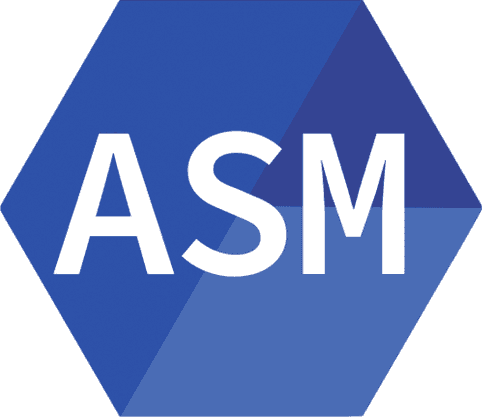

Отчет по курсовой работе
Цель курсовой работы
Спроектировать устройство для автоматического проветривания помещения путем открытия и закрытия окон и дверей
Задачи курсовой работы
- Спроектировать общую схему устройства
- Спроектировать механизм
- Написать программу для управления
- Собрать всё в готовое решение
Общая схема устройства


Управляющий механизм
Микроконтроллер
Программа для управления микроконтроллером
Задачи:
- Управлять механизмом открывания/закрывания
- Отсчитывать необходимое для проветривания время
- Обрабатывать сигналы с устройства передачи данных
- Обрабатывать сигналы с датчиков
Язык программирования



Библиотека для arduino

Взаимодействие микроконтроллера с устройством передачи данных

Взаимодействие с устройством

Текущий код программы